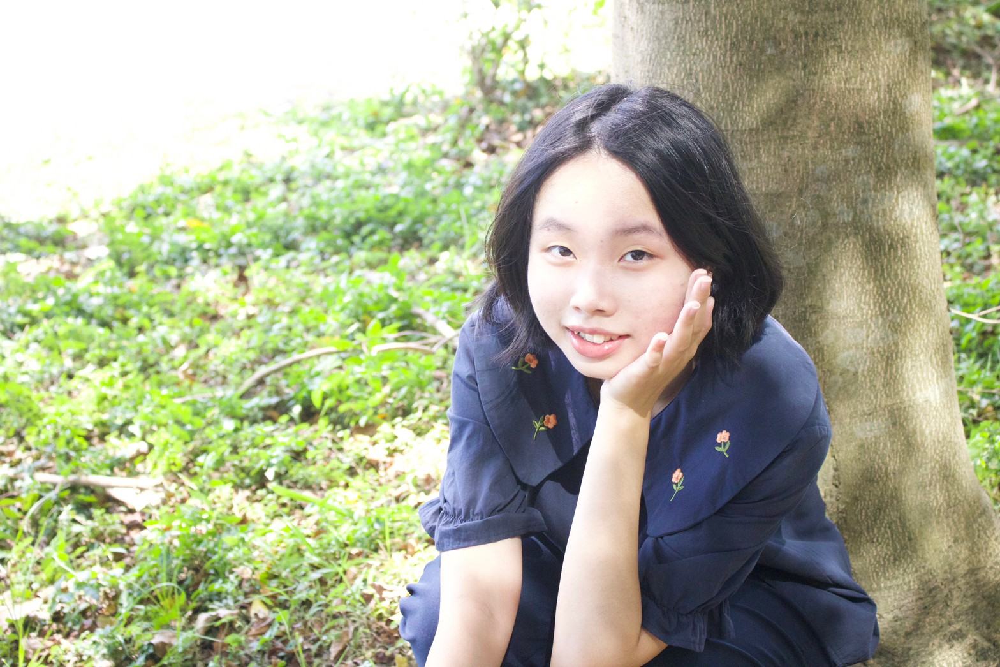
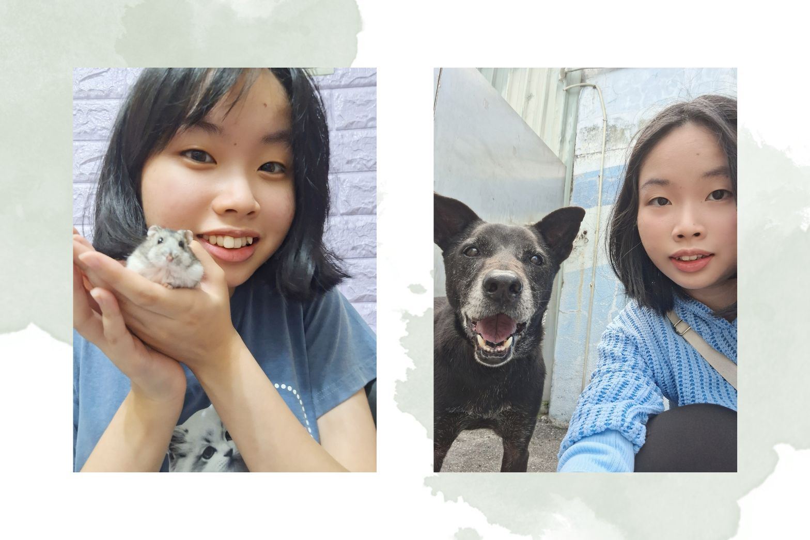

林欣怡 Melody Lin
2004生 | 世新大學 圖文傳播學系 一年級 | 動物愛好者 | INFJ
在我國小時，我的書房偶爾會被當作小型攝影棚，搭起簡單的設備，攝影師是我爸爸，雖然他不是專業攝影師，但是他為了幫自己的產品能夠漂亮的放在產品目錄上，就親自上陣。當時的我覺得很有趣，我現在則是受到深深的影響，想學專業的攝影來幫助爸爸的廣告行銷，甚至是運用各式媒材來輔助爸爸的工作轉型，並且經營網站，不需要委外託管，可以自由的自己規劃版面及影音內容，不受限制，更能發揮最大宣傳效益，提升品牌形象，競爭未來多元的市場。此外，我希望能透過圖文設計出符合潮流的文宣，搭配專業攝影技能，拍攝產品。從文字編輯到排版設計都能一手包辦，是我的未來目標。
近期在社群平台上看到一個台灣女攝影師Zoe，她在國外隨機找路人街拍，並收集每個人獨特的故事或是對人生的感悟。如果我也能用攝影紀錄單純、寫實的影像，用照片描述一段美好的故事，甚至是揭露社會上被忽略的角落，用鏡頭、文字傳播給更多人，讓自己的能力更有意義。
在這四年我會好好學習，並精進自己，最重要的是保持初心，不要迷失自我。
